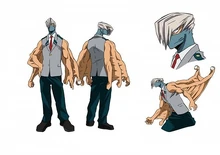

Мезо Шоджи
Мезо Шоджи
- Пол: ♂ Мужской
- Рост: 187 см.
- Возраст: 16
- Группа крови: B
- Родился в: Японии
Мезо Шоджи, также известный как Герой с щупальцами: Щупальце — студент из класса 1-A академии Юэй, обучающийся на профессионального героя.
Внешность
Мезо — высокий парень с белыми волосами, спадающими на лицо. Он носит маску, которая скрывает почти все лицо, кроме глаз. У него 6 рук, которые очень сильные и накаченные.

Он никогда не открывает свое лицо и во время разговора создает рот на одном из своих щупалец. Точно так же он принимает и пищу.
Личность
Несмотря на пугающую внешность, Мезо очень дружелюбный и мягкий человек, который хорошо находит язык с окружающими. Он самоотвержен и готов рисковать собой, чтобы защитить друзей. Он может быть чутким и понимающим, но чаще всего действует зрело и рассудительно, отодвигая эмоции.
Мезо не нуждается в роскоши, ему достаточно минимума вещей, необходимых для существования.
Причуда
 Руки-репликанты: Причуда Мезо заключается в том, что у него есть несколько щупалец вдоль рук. Он может трансформировать кончики этих щупалец, чтобы воспроизвести другие части своего тела (например, рот, уши, глаза). Дублированные части тела более эффективны, чем оригиналы; в результате мезо способен лучше слышать, видеть под большим количеством углов одновременно, и они дают ему гораздо более высокую степень силы.
Руки-репликанты: Причуда Мезо заключается в том, что у него есть несколько щупалец вдоль рук. Он может трансформировать кончики этих щупалец, чтобы воспроизвести другие части своего тела (например, рот, уши, глаза). Дублированные части тела более эффективны, чем оригиналы; в результате мезо способен лучше слышать, видеть под большим количеством углов одновременно, и они дают ему гораздо более высокую степень силы.